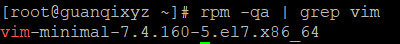
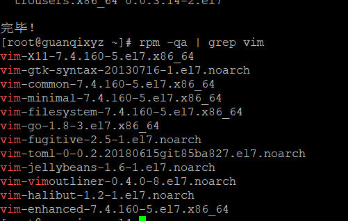
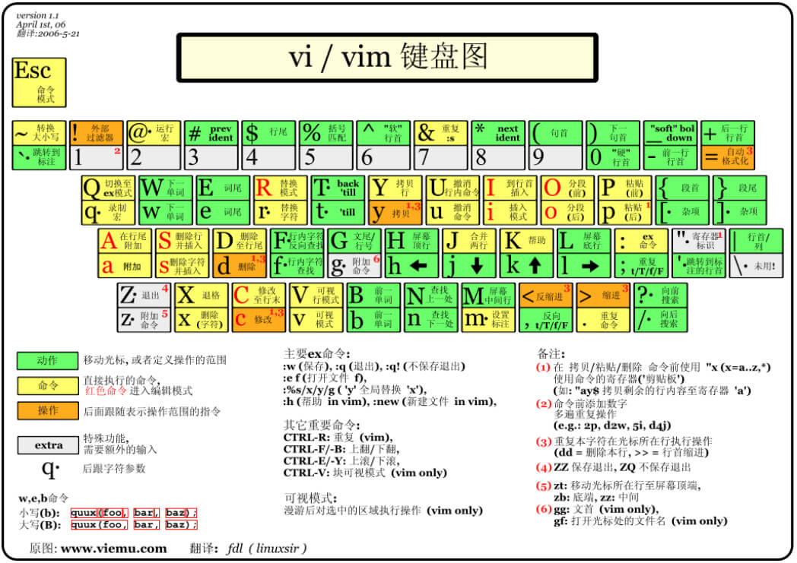
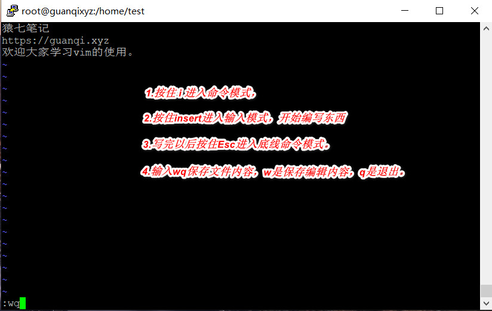

导语:vim是Linux系统中的一个文本编辑器，类似于vscode，记事本等编辑器；是从vi发展继承过来的，是一款广受Linux程序员欢迎的工具。今天，我就一探究竟，揭开vim的神秘面纱。
目录
- 环境准备
- 安装vim
- 常用语法
- 实战演练
环境准备
- centos7
- 可以联网
- putty或xshell
安装vim
要想富，先修路，要想使用vim，先安装包，这是 vim官网。
开始安装vim：
- 检查本机是否安装好vim
1 | rpm -qa | grep vim //查看vim命令的软件包 |

检测vim
- 安装相关软件包
1 | yum install -y vim* |

查看vim
常用语法
下面这幅图片是一个经典的vim命令图。

vim命令图
命令模式
vim有三种模式：
- 命令模式，就是使用vim启动一个文件；可以按下
i/a/o进入输入模式。 - 输入模式，就是可以编辑文件内容，可以
Esc退出输入模式到命令模式。 - 底线命令模式，就是按下冒号(英文)
:进入底线命令模式。
命令大全
下面是常用的一些命令：包括光标移动、复制、粘贴和搜索、替换、切换模式等命令。
| 序号 | 类型 | 方法 | 说明 |
|---|---|---|---|
| 1 | 移动光标 | h 或 向左箭头键(←) | 光标向左移动一个字符 |
| 2 | 移动光标 | j 或 向下箭头键(↓) | 光标向下移动一个字符 |
| 3 | 移动光标 | k 或 向上箭头键(↑) | 光标向上移动一个字符 |
| 4 | 移动光标 | l 或 向右箭头键(→) | 光标向右移动一个字符 |
| 5 | 移动光标 | [Ctrl] + [f] | 屏幕『向下』移动一页，相当于 [Page Down]按键 (常用) |
| 6 | 移动光标 | [Ctrl] + [b] | 屏幕『向上』移动一页，相当于 [Page Up] 按键 (常用) |
| 7 | 移动光标 | [Ctrl] + [d] | 屏幕『向下』移动半页 |
| 8 | 移动光标 | [Ctrl] + [u] | 屏幕『向上』移动半页 |
| 9 | 移动光标 | + | 光标移动到非空格符的下一行 |
| 10 | 移动光标 | - | 光标移动到非空格符的上一行 |
| 11 | 移动光标 | n<space> |
那个 n 表示『数字』，例如 20 。按下数字后再按空格键，光标会向右移动这一行的 n 个字符。例如 20<space> 则光标会向后面移动 20 个字符距离。 |
| 12 | 移动光标 | 0 或功能键[Home] | 这是数字『 0 』：移动到这一行的最前面字符处 (常用) |
| 13 | 移动光标 | $ 或功能键[End] | 移动到这一行的最后面字符处(常用) |
| 14 | 移动光标 | H | 光标移动到这个屏幕的最上方那一行的第一个字符 |
| 15 | 移动光标 | M | 光标移动到这个屏幕的中央那一行的第一个字符 |
| 16 | 移动光标 | L | 光标移动到这个屏幕的最下方那一行的第一个字符 |
| 17 | 移动光标 | G | 移动到这个档案的最后一行(常用) |
| 18 | 移动光标 | nG | n 为数字。移动到这个档案的第 n 行。例如 20G 则会移动到这个档案的第 20 行(可配合 :set nu) |
| 19 | 移动光标 | gg | 移动到这个档案的第一行，相当于 1G 啊！ (常用) |
| 20 | 移动光标 | n<Enter> |
n 为数字。光标向下移动 n 行(常用) |
| 21 | 搜索替换 | /word | 向光标之下寻找一个名称为 word 的字符串。例如要在档案内搜寻 vbird 这个字符串，就输入 /vbird 即可！ (常用) |
| 22 | 搜索替换 | ?word | 向光标之上寻找一个字符串名称为 word 的字符串。 |
| 23 | 搜索替换 | n | 这个 n 是英文按键。代表重复前一个搜寻的动作。举例来说， 如果刚刚我们执行 /vbird 去向下搜寻 vbird 这个字符串，则按下 n 后，会向下继续搜寻下一个名称为 vbird 的字符串。如果是执行 ?vbird 的话，那么按下 n 则会向上继续搜寻名称为 vbird 的字符串！ |
| 24 | 搜索替换 | N | 这个 N 是英文按键。与 n 刚好相反，为『反向』进行前一个搜寻动作。 例如 /vbird 后，按下 N 则表示『向上』搜寻 vbird 。 |
| 25 | 搜索替换 | :n1,n2s/word1/word2/g |
n1 与 n2 为数字。在第 n1 与 n2 行之间寻找 word1 这个字符串，并将该字符串取代为 word2 ！举例来说，在 100 到 200 行之间搜寻 vbird 并取代为 VBIRD 则：『:100,200s/vbird/VBIRD/g』。(常用) |
| 26 | 搜索替换 | :1,$s/word1/word2/g 或 :%s/word1/word2/g |
从第一行到最后一行寻找 word1 字符串，并将该字符串取代为 word2 ！(常用) |
| 27 | 搜索替换 | :1,$s/word1/word2/gc 或 :%s/word1/word2/gc |
从第一行到最后一行寻找 word1 字符串，并将该字符串取代为 word2 ！且在取代前显示提示字符给用户确认 (confirm) 是否需要取代！(常用) |
| 28 | 删除、复制与粘贴 | x, X | 在一行字当中，x 为向后删除一个字符 (相当于 [del] 按键)， X 为向前删除一个字符(相当于 [backspace] 亦即是退格键) (常用) |
| 29 | 删除、复制与粘贴 | nx | n 为数字，连续向后删除 n 个字符。举例来说，我要连续删除 10 个字符， 『10x』。 |
| 30 | 删除、复制与粘贴 | dd | 删除游标所在的那一整行(常用) |
| 31 | 删除、复制与粘贴 | ndd | n 为数字。删除光标所在的向下 n 行，例如 20dd 则是删除 20 行 (常用) |
| 32 | 删除、复制与粘贴 | d1G | 删除光标所在到第一行的所有数据 |
| 33 | 删除、复制与粘贴 | dG | 删除光标所在到最后一行的所有数据 |
| 34 | 删除、复制与粘贴 | d$ | 删除游标所在处，到该行的最后一个字符 |
| 35 | 删除、复制与粘贴 | d0 | 那个是数字的 0 ，删除游标所在处，到该行的最前面一个字符 |
| 36 | 删除、复制与粘贴 | yy | 复制游标所在的那一行(常用) |
| 37 | 删除、复制与粘贴 | nyy | n 为数字。复制光标所在的向下 n 行，例如 20yy 则是复制 20 行(常用) |
| 38 | 删除、复制与粘贴 | y1G | 复制游标所在行到第一行的所有数据 |
| 39 | 删除、复制与粘贴 | yG | 复制游标所在行到最后一行的所有数据 |
| 40 | 删除、复制与粘贴 | y0 | 复制光标所在的那个字符到该行行首的所有数据 |
| 41 | 删除、复制与粘贴 | y$ | 复制光标所在的那个字符到该行行尾的所有数据 |
| 42 | 删除、复制与粘贴 | p, P | p 为将已复制的数据在光标下一行贴上，P 则为贴在游标上一行！ 举例来说，我目前光标在第 20 行，且已经复制了 10 行数据。则按下 p 后， 那 10 行数据会贴在原本的 20 行之后，亦即由 21 行开始贴。但如果是按下 P 呢？ 那么原本的第 20 行会被推到变成 30 行。 (常用) |
| 43 | 删除、复制与粘贴 | J | 将光标所在行与下一行的数据结合成同一行 |
| 44 | 删除、复制与粘贴 | c | 重复删除多个数据，例如向下删除 10 行，[ 10cj ] |
| 45 | 删除、复制与粘贴 | u | 复原前一个动作。(常用) |
| 46 | 删除、复制与粘贴 | [Ctrl]+r | 重做上一个动作。(常用) |
| 47 | 删除、复制与粘贴 | . | 不要怀疑！这就是小数点！意思是重复前一个动作的意思。 如果你想要重复删除、重复贴上等等动作，按下小数点『.』就好了！ (常用) |
| 48 | 切换模式 | i, I | 进入输入模式(Insert mode)：i 为『从目前光标所在处输入』， I 为『在目前所在行的第一个非空格符处开始输入』。 (常用) |
| 49 | 切换模式 | a, A | 进入输入模式(Insert mode)：a 为『从目前光标所在的下一个字符处开始输入』， A 为『从光标所在行的最后一个字符处开始输入』。(常用) |
| 50 | 切换模式 | o, O | 进入输入模式(Insert mode)：这是英文字母 o 的大小写。o 为『在目前光标所在的下一行处输入新的一行』； O 为在目前光标所在处的上一行输入新的一行！(常用) |
| 51 | 切换模式 | r, R | 进入取代模式(Replace mode)：r 只会取代光标所在的那一个字符一次；R会一直取代光标所在的文字，直到按下 ESC 为止；(常用) |
| 52 | 切换模式 | [Esc] |
退出编辑模式，回到一般模式中(常用) |
| 53 | 储存、离开 | :w |
将编辑的数据写入硬盘档案中(常用) |
| 54 | 储存、离开 | :w! |
若文件属性为『只读』时，强制写入该档案。不过，到底能不能写入， 还是跟你对该档案的档案权限有关啊！ |
| 55 | 储存、离开 | :q |
离开 vi (常用) |
| 56 | 储存、离开 | :q! |
若曾修改过档案，又不想储存，使用 ! 为强制离开不储存档案。 |
| 57 | 储存、离开 | :wq |
储存后离开，若为 :wq! 则为强制储存后离开 (常用) |
| 58 | 储存、离开 | ZZ | 这是大写的 Z 喔！若档案没有更动，则不储存离开，若档案已经被更动过，则储存后离开！ |
| 59 | 储存、离开 | :w [filename] |
将编辑的数据储存成另一个档案（类似另存新档） |
| 60 | 储存、离开 | :r [filename] |
在编辑的数据中，读入另一个档案的数据。亦即将 『filename』 这个档案内容加到游标所在行后面 |
| 61 | 储存、离开 | :n1,n2 w [filename] |
将 n1 到 n2 的内容储存成 filename 这个档案。 |
| 62 | 储存、离开 | :! command |
暂时离开 vi 到指令行模式下执行 command 的显示结果！例如『:! ls /home』即可在 vi 当中察看 /home 底下以 ls 输出的档案信息！ |
| 63 | 环境变更 | :set nu |
显示行号，设定之后，会在每一行的前缀显示该行的行号 |
| 64 | 环境变更 | :set nonu |
与 set nu 相反，为取消行号！ |
注意:数字通常代表重复做几次的意，也有代表去到第几个的意思。
实战演练
学以致用，经过上面的学习，应该或多或少对这个vim工具的命令使用有了了解，下面就是实战演练。
现在，我创建一个名为gqxyz的文本文件，并且切换模式输入内容，然后保存退出。
进入创建文件
打开putty或者xshell，在命令行输入vim gqxyz.txt，便创建并且进入了文件，输入i进入编辑模式。

创建进入vim
输入内容
按下Insert插入内容。

编辑保存vim
保存内容
按下Esc，输入冒号:，输入wq，保存编辑内容并且退出。
vim的学习就到这里了，以上的内容要勤加练习，方能成功掌握vim工具的使用。